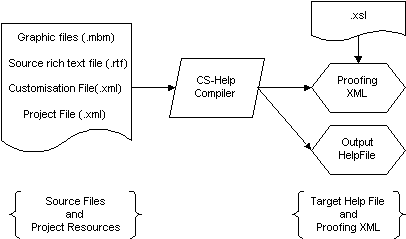

|
| |
Context Sensitive Help (CS Help) provides users with the specific help topic for the context in which they have a problem. CS Help files are generated using the CS Help compiler, which replaces the Aleppo help authoring tool used in releases prior to and including ER5.
The CS Help compiler builds help files from the command line, using
information defined in a project file, rtf source file or files,
and an optional customisation file. The compiler also generates a C++ header
file containing literal descriptors for each context—which can
be used to provide a link to the appropriate help topic from an
application.
|
CS Help provides significant improvements on the Help system which was present in EPOC R5. The main differences are that:
Help is now context-sensitive, so the user is given information on the exact topic they are interested in.
a new custom help engine (hlpmodel.dll) replaces
the EPOC Data engine, (damodl.dll).
third party developers can integrate their help files into the help files used by the ROM-based applications. Pressing the help key in any application, whether ROM-based, or a third party application in RAM, will present the user with the relevant help topic.
Help may also be invoked using an application's help menu option, if one is provided.
Despite these changes, the process of creating context sensitive help files is very similar to the process used by Aleppo. The main differences between the CS Help compiler and Aleppo are that:
the project and customisation files are now written in XML rather than plain text.
the project file must specify the UID of the help file to generate.
the CS Help compiler provides XSL style sheets that allows a representation of the help file to be viewed in a XML enabled browser.
the help files produced are wide character (Unicode) only.
|
This section provides a brief introduction to the purpose of each of the CS Help compiler source files. For a canonical reference to the structure of each of these files go to the appropriate topic in the “See also” section.
The CS Help compiler is invoked using a project file, which
defines the locations of all other files used by the project. These files
include source rtf files, customisation files, graphics files
etc.
The CS Help compiler supports various customisation options that can be used to change the appearance of the final help topics. These options are defined in a customisation file, which is specified in the project file. If no file is defined a default set of customisation options is used.
rtf filesSource rtf files contain all the help information
for a single application. Style marked paragraphs are used to identify the
following information:
category name — the name of the category, or application, as it appears in the contents view of CS Help.
category UID — the UID of the help file to be generated. This is unique for the help file, and allows EPOC to merge help files with the same name.
topics — the individual help subjects, marked by topic titles, that make up the help file
In addition to the title and information, topics also have a number of fields to provide context sensitivity and searching. These include:
context—a short unique context phrase which is used to create the link between an application context and the specific help topic.
synonyms—alternative search words for the topic. Typically words with similar meanings or common miss-spellings.
indexes—An index is a string associated with a topic. Index phrase may relate to more than one topic, and hence need not be unique within a help project.
|
The process of CS Help authoring is illustrated in the following diagram:

Operation of CS-Help
The CS Help compiler is invoked with a single command, that specifies the name of a project file and whether the output is to be a CS Help file or proofing XML. The project file defines the location of all other resources needed, including customisation and source rtf files.
The process of help authoring is thus:
Edit rich-text source files using a word processor that can
generate the styles used by CS Help e.g. Microsoft Word for Windows documents
based on the cshelp.dot template.
Create project and customisation files.
Invoke the CS Help compiler to produce proofing XML.
Check the XML proofing copy on a web browser. The style-sheet
/epoc32/tools/cshlpcmp/xsl/csptml.xsl allows the output to be
viewed as though produced using the default customisation options.
If changes are required, make them in the word processor and
re-run the compiler.
Invoke the CS Help compiler to produce a compiled Help file.
Check the generated help file on the emulator.
If changes are required, make them in the word processor and
re-run the compiler.
Copyright ©2002 Symbian Ltd. 6.1-00174 |
|